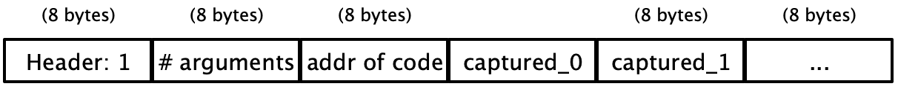

Lecture 9: Global Function Definitions and Non-tail Calls
We’ve seen how to call into Rust code using the System V AMD64 calling convention, and we’ve seen how code using only tail calls can be compiled directly to efficient assembly using only jumps. Today we will extend our source language to include non-tail calls, and we will introduce our own internal calling convention
1 Non-Tail Calls and the Stack
Tail calls were great because they could be compiled efficiently as a jump, but most calls in a program aren’t that simple. In a tail call, we call another function and produce whatever value it produced, whereas in a non-tail call, we use some other function as a sub-procedure to produce some intermediate value that we then use for some other purpose. For instance consider the following program which for simplicity we’ve already written in sequential form:
def max(x,y):
let b = x >= y in
if b: x else: y
in
let z = max(10, 4) in
let q = max(3, 8) in
z * q
Here we use max as a convenient sub-procedure to compute
the maximum of two numbers that we then use multiple times with
different inputs in the main expression of our program. If we think
about how we will compile these expressions something stands out. We
store local variables and arguments on the stack, so z
and q will be placed at [RSP - 8 * 1], [RSP - 8 *
2] respectively, but also in the body of max we place
x and y using the same offsets: [RSP
- 8 * 1], [RSP - 8 * 2]. So if whenever we make a call we jmp
into the code for max, won’t our local variables be
overwritten?
Do Now!
How can we ensure that the variables
x,ydon’t overwrite the values ofz,q?
Well notice that while the literal code for the address is the same,
the address [RSP - 8 * n] is relative to the value of
RSP. This is the difference betweeen a local variable and
a global variable, which would have a fixed globally known
address in memory. So to implement a function call, we need to teach
our functions how to share the memory allocated to the
process. If we recall what the stack looks like:

The stack pointer RSP points to the base of our current stack
frame, which is our current return address. Below that (higher
addresses) we have our caller’s stack frames, which we are careful not
to overwrite. In our stack frame we store our local variables, but
above that we have free space. When we make a non-tail call, we will
ensure that the base of the callee’s stack frame is above all of our
local variables, and so if the callee follows our stack protocol, it
will be sure not to overwrite any of our stack frame. Additionally, we
need to provide a new return address, which will be stored at the base
of the callee’s stack frame: an address back to our code so
that when the callee returns the code after the call will execute.
So for example we can compile the above code as follows:
max:
;; as previously
start_here:
mov [RSP - 8 * 2], 20 ;; store the first argument (10)
mov [RSP - 8 * 3], 8 ;; store the second argument (4)
call max ;; push return_addr_1 and jump to max
return_addr_1:
mov [RSP - 8 * 1], RAX ;; store the result in z
mov [RSP - 8 * 3], 6 ;; store the first argument (3)
mov [RSP - 8 * 4], 16 ;; store the second argument (8)
sub RSP, 8 ;; move RSP so as not to overwrite our local variable z
call max
return_addr_2:
add RSP, 8
mov [RSP - 8 * 2], RAX ;; store the result in q
mov RAX, [RSP - 8 * 1] ;; load z
add RAX, [RSP - 8 * 2] ;; multiply z * q
ret ;; return the resultAt the beginning of start_here, the RSP is pointing to the
return address from our Rust main function. We then mov the two arguments onto the stack and call max, when we start executing max the stack looks like
Let’s step through what the stack looks like at each point.

That is, the stack pointer is pointing to the new return address,
return_addr_1 that we just pushed, and the implementation of
max can freely use the space above it. Then when max
returns, we will resume at return_addr_1. Note that we don’t
actually need to include the labels return_addr_1 and
return_addr_2 in the assembly program, the call
instruction will push the next address of the next instruction onto
the stack even if it doesn’t have a label. We are just including them
to be explicit.
The second time we make a call to max, we need to make sure that
when we call we don’t overwrite our new local variable
z, so before we subtract from RSP so that when we
call, the base of the callee’s stack frame is entirely above the
caller’s stack frame. Then upon entry into max the second time, the stack looks like this:
So this leads us to the general case for how to compile a non-tail
call. Say we have M local variables and we are calling a function
f with N arguments x0,x1,.... Then before we start the call the stack looks like
Then we should first mov all of the arguments into the space
above our stack frame:

Then we should sub from RSP to put it at the right spot so
that a call will push the return address to the right place:

And then we execute the call instruction, making sure to
add back to RSP so it returns to its original place at the base
of our stack frame. In code, this means a call should be compiled as
follows:
mov [RSP - 8 * (M + 2 + 0)], arg[0]
mov [RSP - 8 * (M + 2 + 1)], arg[1]
...
mov [RSP - 8 * (M + 2 + N - 1)], arg[N - 1]
sub RSP, 8 * M
call f
add RSP, 8 * M1.1 Snake Calling Convention v0
Let’s codify this approach to compiling function calls into a more formal specification. We’ll call this the Snake Calling Convention v0, as it’s the way we will make internal function calls as opposed to the System V calling convention we use when calling into Rust.
To call a function with N variables:
Upon entry,
RSPshould be at an address divisible by16and point to the return address.The arguments (each 64-bits) will be placed in order in decreasing addresses from
RSPwith the first argument closest toRSPStack space at higher addresses than
RSPbelongs to the caller and so should be unchanged when returning.To return, place the return value into
RAX, decrementRSPby 8 and jump to the caller’s return address (this can be achieved by simply usingret)The callee is free to use any other registers as they see fit (i.e., the caller must save the values if they need them).
There are two parts of this calling convention we haven’t covered: first the alignment (which is there to make calling into Rust code easier) and second, the registers. It essentially says we as the callee in the Snake calling convention never have to worry about overwriting registers. Once we start using registers we will need to be more careful about this.
The alignment part is trickier: we say upon entry into a
function, we want the address to be equal to 0 modulo
16. Note that this is the exact oppposite of the
alignment requirement for System V. While that might sound strange, it
should actually make our lives easier: in the common case of a call
into Rust that pushes no arguments (and saving no locals), we can just
call the code directly. But when we do have to save locals, it
means that we should be sure to add extra padding if we would
otherwise be misaligned.
Exercise
If we keep
RSPat 0 modulo 16 in our Snake code, and Rust code must haveRSPequal to 8 modulo 16 upon entry to a function, then when we call from Snake to Rust should we round up our number of locals saved to the nearest even number or odd number?
Also remember that while our internal function definitions are called
only using the Snake calling convention, the start_here function
is called using the System V calling convention, which is as mentioned
above has exactly the wrong alignment. A simple way to do this is to
add a "wrapper" around our main expression:
start_here:
call main
ret
main:
;; actual main expressionThis way we can compile our main expression as if it were a function
with 0 variables and use the same compilation strategy. This
also has a negliegible effect on the runtime/space usage of our
program.
2 Local Function Definitions and Lambda Lifting
The above strategy works fine for top-level function definitions, but consider what happens if we have a local function definition:
def multiply(x, y):
def mult_by_x(i):
if i == 0:
0
else:
x + mult_by_x(i - 1)
in
loop(y)
in
multiply(5, 3)This function multiplies two numbers x and
y by repeated addition. It works by defining a recursive
function mult_by_x that works by multiplying the fixed
variable x to the argument i. Since the
recursive call is not a tail call, the stack grows each time a
recursive call is made, and so we cannot tell where x
will be stored on the stack statically! We say that
mult_by_x captures the variable x
in its body. To implement this, we want to copy x into
mult_by_x’s stack frame on each call. The easiest way to
do this is by a program transformation, which will transform all local
function definitions into global ones:
def multiply(x, y):
mult_by_x(x, y)
and
def mult_by_x(x, i):
if i == 0:
0
else:
x + mult_by_x(x, i - 1)
in
multiply(5, 3)This process is called lambda lifting because local function definitions are often constructed using lambda-notation. So if we can do this transformation, we will be able to use the above implementation of non-tail calls. But there are a few pitfalls to lambda lifting that we discuss in class.
Exercise
Implement non-tail calls for globally defined functions in diamondback.